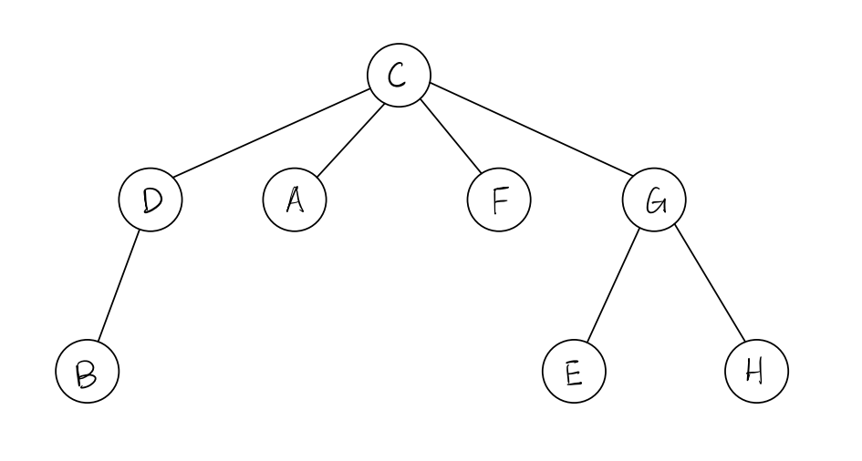
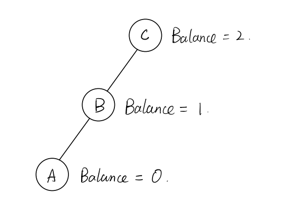
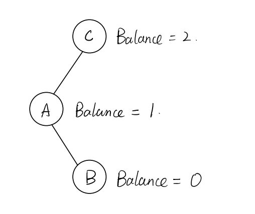
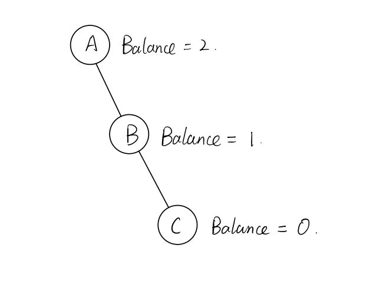
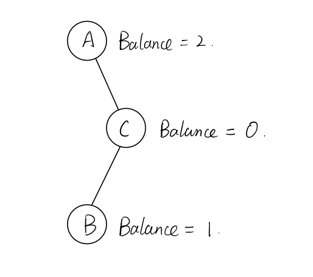
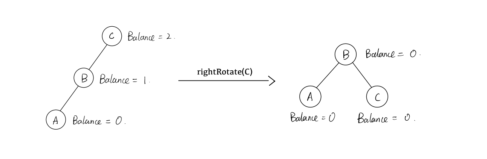
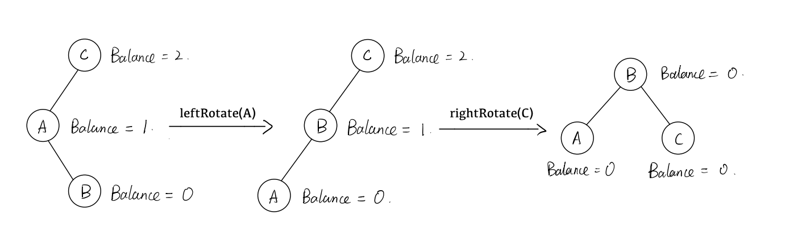
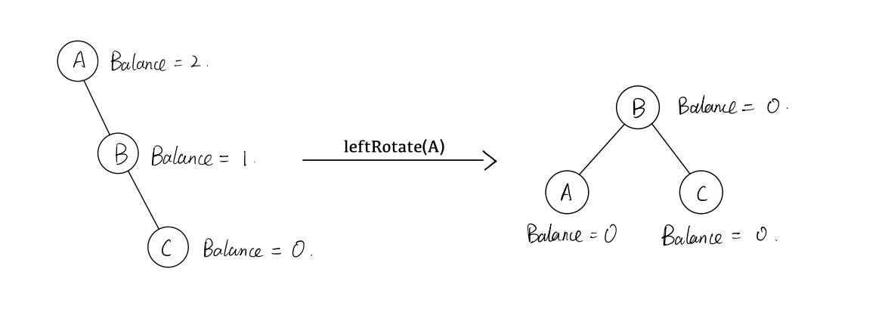
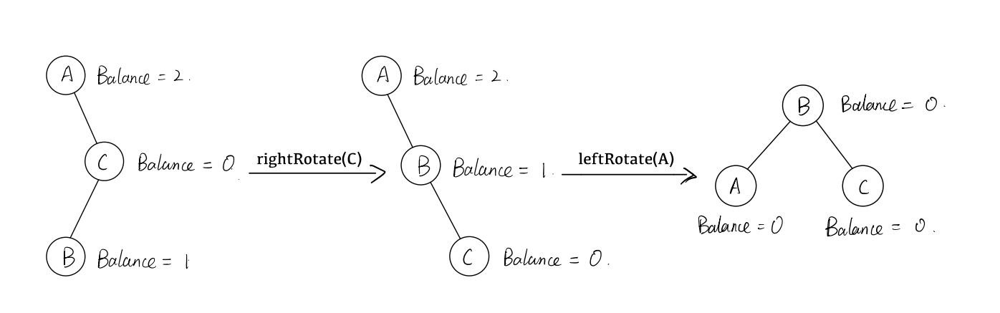

AVL Tree Tutorial
Welcome to the AVL tutorial! The following slides will introduce this fascinating data structure to you. We have separated the introduction into several subpages:
-
Intro to tree structure
-
Intro to binary tree structure
-
Intro to binary search tree structure
-
Intro to self-balancing binary search tree structure
-
Intro to AVL tree background
-
Intro to AVL rotational adjustments
What is a tree?
- A tree is a kind of data structure.
- Trees are a collection of nodes.
- Nodes have a key and a value associated with them.
- They can also have child nodes, or nodes on the level below that they are connected to.
- It's shaped like an upside down tree, or like tree roots, hence the name.
- We call the first node at the top the "root."
- We call a node without any children a "leaf" node.
- What is depth? What is height?
- Depth and height are important concepts of trees.
- Depth is the number of steps away from the root node a node is.
- Height is the maximum number of steps from a node to its leaf nodes.
- An example of a tree: 
- In the above example:
- Node G has a depth of 1 and a height of 1.
- Node B has a depth of 2 and a height of 0.
- Node C has a depth of 0 and a height of 2.
- What information can we get from a tree? What operations can we perform?
- Get the number of nodes in the tree (its size).
- Get the value associated with a node's key.
- Get the height of the tree.
- Get the maximum and minimum key in the tree.
- Check if the tree has a node with a specific key.
- Insert a new node into the tree.
- Update an existing node's value.
- Remove a node with a specific key from the tree.
- ...And more!
What is a binary tree?
- A binary tree is a tree in which each node is allowed at most two children.
- An example of a binary tree:
- What are traversals?
- Traversals are a list of the nodes in a tree. There are 4 different kinds of traversals that produce a different order of nodes.
- A pre-order traversal visits the current node first, then recursively visits the node's left subtree, then the node's right subtree.
- A post-order traversal recursively visits the current node's left subtree first, then the node's right subtree, then the node itself.
- An in-order traversal recursively visits the current node's left subtree first, then the node itself, then the node's right subtree.
- A level-order traversal uses a breadth-first search approach.

What is a binary search tree?
- A binary search tree is a binary tree that has three properties. For any node:
- The left subtree of the node only has nodes with keys less than the node's key.
- The right subtree of the node only has nodes with keys more than the node's key.
- The left and right subtree of the node must also be binary search trees.
- An example of a binary search tree:

What is a self-balancing binary search tree?
- A self-balancing binary search tree is a binary search tree that performs some operation on itself when it becomes unbalanced.
- What is balance?
- Balance is the difference in heights between the left and right subtrees of a node.
- There are four cases of unbalance in a tree:
- Left left: 
- Left right: 
- Right right: 
- Right left: 
- Trees can become unbalanced when a new node is inserted or when an existing node is removed.
Who made AVL trees?
- AVL trees were invented by Georgy Adelson-Velsky and Evgenii Landis.
- AVL trees were the first kind of self-balancing binary search tree.
What is unbalance to AVL trees?
The AVL tree considers a node whose balance is greater than 1 to be unbalanced. It will perform a rotational adjustment to that node to make it balanced.
How do AVL trees differ from binary search trees?
- An AVL tree is a kind of self-balancing binary search tree that performs rotations on nodes when it becomes unbalanced. The kind of rotation depends on how the tree is unbalanced.
- Left left: 
- Left right: 
- Right right: 
- Right left: 